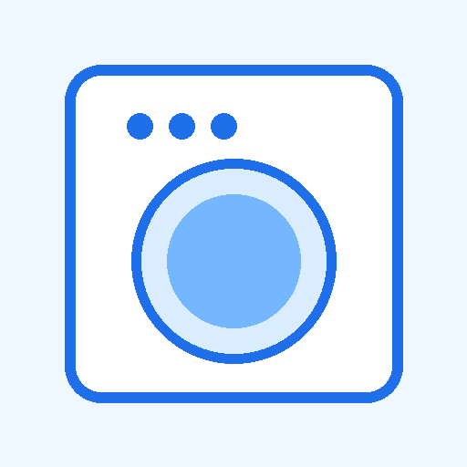

ドラム式洗濯機
販買マスター
知識をチカラに、提案を価値に。
お客様に最適な一台を。

本体寸法だけでなく搬入・防水パン・蛇口・扉まで。
毎日乾燥なら方式・電力量・時間が重要。
乾燥フィルター・熱交換器・ダクトなどの手間も案内。
メーカー全体を一括りにせず、代表上位モデルを軸に比較しています。機能が全機種共通でない場合は対象型番を明記しています。
間違えやすいポイント
お客様タイプから選ぶ早見図
文字を読む前に、まず「どんな使い方か」で候補を絞ると分かりやすい。
※代表モデルの比較イメージ。機種によって異なるため、販売時は対象型番を確認。
5社の立ち位置を一言で図解
省エネ・便利機能のバランス型
最上位のハイブリッド乾燥が特徴
7kg乾燥・UFB・低騒音
らくメンテ・風アイロン・13kg
コンパクト・まっ直ぐドラム
容量・時間・お手入れまで確認
お客様の希望を選ぶと、比較を始めやすいメーカーを表示します。
まず覚える：乾燥方式は4つに分けて考える
ドラム式の乾燥は、販売時には大きく ①ヒートポンプ式 ②ヒーター式（水冷除湿） ③ヒーター式（排気） ④ヒートポンプ＋ヒーターのハイブリッド式 に整理すると理解しやすい。
メーカー独自名称は、この基本方式に独自の風路・制御・ヒーター・ドラム構造などを組み合わせたもの。名称だけで方式を判断しない。
① ヒートポンプ乾燥
仕組み：湿った空気から水分を取り除き、熱交換で再び温めた乾いた空気をドラムへ戻して循環させる。エアコンの除湿に近い考え方。
「毎日乾燥まで使うなら、まずヒートポンプ式を比較してみましょう。ヒーターで高温にする方式より省エネ性を出しやすく、衣類にも比較的やさしい乾燥です。」
② ヒーター乾燥（水冷除湿タイプ）
仕組み：ヒーターで温めた空気を衣類に当て、発生した湿気を冷却して水に戻し排水する方式。水道水で除湿用の冷却を行う機種がある。
「本体価格だけでなく、乾燥を毎日使うかを確認してください。頻繁に乾燥する場合は、購入価格だけでなくランニングコストも比較します。」
③ ヒーター乾燥（排気タイプ）
仕組み：ヒーターで温めた空気で乾かし、湿気を含んだ空気を機外へ排出する方式。
④ ハイブリッド乾燥
考え方：ヒートポンプ乾燥を基本に、必要な場面でヒーターの熱を加えるタイプ。SHARPの上位機では「ハイブリッド乾燥NEXT」として採用されている。
「ヒートポンプだけでなく補助ヒーターも組み合わせる方式です。方式名だけではなく、実際の6kg乾燥時の電力量や時間まで見て比べましょう。」
5社の代表的な乾燥方式
重要：ヒートポンプなら全部同じ、ではない
同じヒートポンプ方式でも、次の違いで乾燥性能は変わる。
- 風量・風速：衣類をどれだけ広げて温風を当てられるか
- ドラム径・形状：衣類が舞いやすいか、絡みにくいか
- 熱交換器：除湿・再加熱の効率
- 乾燥経路：風路の太さやホコリ対策
- センサー：湿度・温度・衣類量などをどう検知するか
- 制御：標準・省エネ・時短など運転方法
- 乾燥容量：6kgと7kgでは一度に乾かせる量が違う
接客で必ず見る5項目
- 乾燥方式 — ヒートポンプ / ヒーター / ハイブリッド
- 定格乾燥容量 — 6kgか7kgか等
- 洗濯～乾燥の消費電力量 — Whで比較
- 洗濯～乾燥時間 — 標準コースと省エネコースを分けて見る
- お手入れ — 乾燥フィルター、熱交換器、乾燥ダクト、糸くずフィルター
「ヒートポンプだからおすすめ」では弱い。
“毎日乾燥する → 電力量”“まとめて乾燥 → 容量”“アイロンを減らしたい → シワ”“掃除が面倒 → お手入れ”までつなげる。
間違えやすい説明
乾燥の除湿用冷却水を必要としない、という意味。洗濯～乾燥コース全体では当然給水する。
水冷除湿タイプと排気タイプなどがある。方式を確認する。
衣類の素材や取扱表示、量、コースによって縮み・傷みは起こり得る。
風量・ドラム・熱交換・制御・お手入れ構造で大きく異なる。
方式名ではなく、対象機種の実測基準の消費電力量・時間で比較する。
超簡単に覚えるなら
ヒートポンプ：「除湿して熱を再利用 → 省エネ・低温」
ヒーター：「電熱で直接あたためる → 高温になりやすい」
ハイブリッド：「ヒートポンプ＋必要に応じてヒーター補助」
基礎説明はPanasonic、SHARP、東芝、日立、AQUA各社の公式説明を照合して作成。温度・電力量・時間は機種やコースにより異なるため、販売時は対象型番の公式仕様表で確認してください。
仕組みの違いをやさしく理解
乾燥方式は「名前」だけでなく、空気と湿気がどう動くかで覚えると接客で説明しやすい。
空気中の湿気を取り除き、熱を再利用しながら乾燥。比較的低温で、省エネ性を出しやすい。
ヒーターで温風を作って乾燥。水冷除湿タイプでは、湿気を水に戻すため乾燥中にも冷却水を使う。
ヒートポンプを基本に、必要に応じてヒーターを組み合わせる方式。方式名だけでなく実際の電力量・時間で比較する。
ヒーターで温めた空気をドラムへ送り、湿った温風を機外へ排出する方式。周囲への熱・湿気の影響も確認する。
接客ポイント
方式は入口。容量・時間・電力量まで見る。
本体価格だけでなく日々の使用を想定する。
乾燥性能を維持するために重要。
- 搬入経路：玄関・廊下・曲がり角・階段・洗面所入口
- 防水パン：内寸、排水口位置、かさ上げの要否
- 蛇口：高さ・位置。本体と干渉しないか
- 本体寸法：幅だけでなく奥行き・高さも確認
- ドア：左開き/右開き、開けた時の壁・洗面台との干渉
- 前方スペース：ドア開閉＋洗濯物の出し入れ
- 排水：排水ホースの取り回し
実際の設置可否はメーカーの据付説明書・販売店の工事基準で最終確認してください。